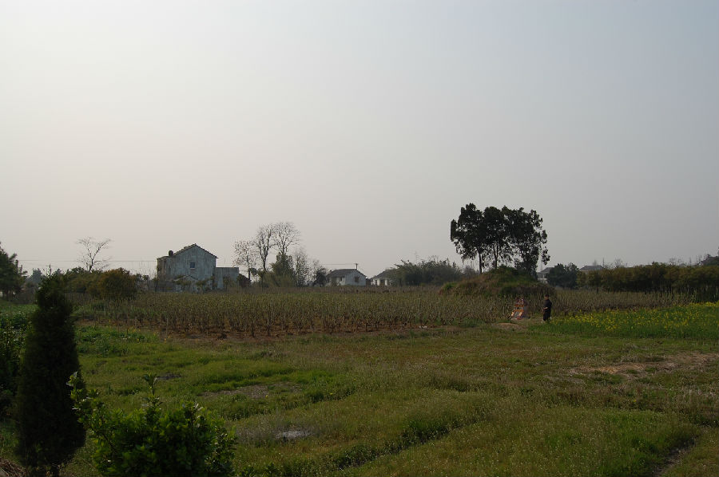
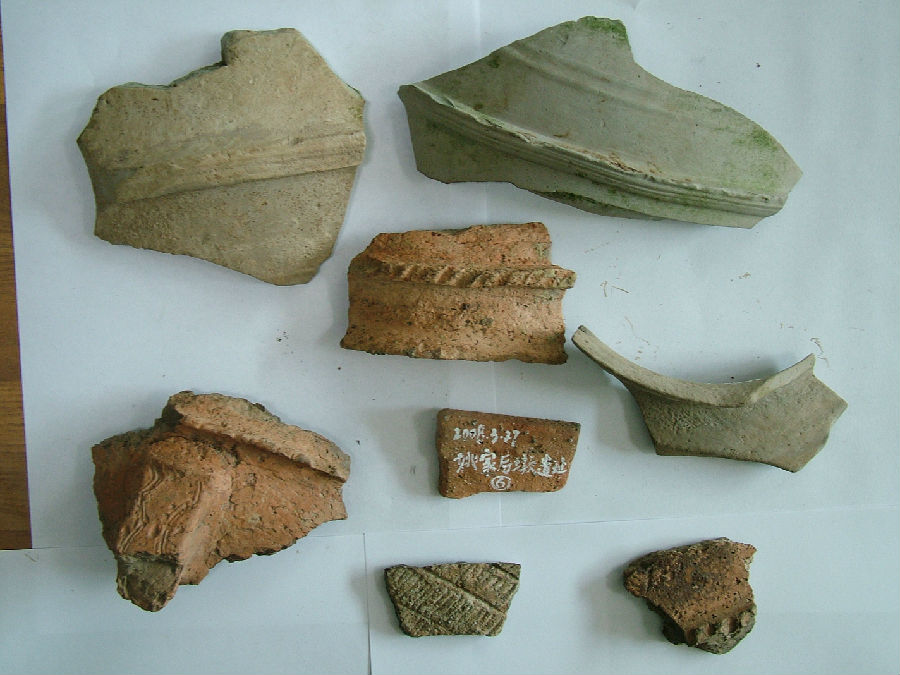

嘉兴市文物保护网 · 市级文物保护点 · 2020-11-09 · 原文


姚家后墩遗址位于嘉兴市南湖区凤桥镇三星村与余新镇交界处，东南距南窑桥自然村约300米，原貌呈方形。东西、南北长度均约为50米，占地面积约2500平方米。遗址土墩距离水田高度为0.5米至1.5米。1999年因筑路填土，遗址西南角曾取土，出土许多陶片、石器和玉器。凤桥镇派出所前往处理并收缴了一批出土文物，后移交嘉兴博物馆，其中有玉镯、玉锥、石斧、玉珠等20多件。现在遗址西南一角土墩已被取为平地，遗址文化层厚0.5—0.8米，从出土器物分析，姚家墩遗址为新石器时代（崧泽文化至良渚文化）遗址。该遗址是嘉兴悠久历史的见证，有助于我们进一步了解嘉兴新石器时期的社会状况和生产情况，具有较高的历史价值。2002年公布为嘉兴市文物保护点。